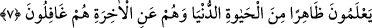

“bilmezler.”
7. Onlar, dünyâ hayatının görünen yüzünü bilirler. Âhiretten ise, onlar tamamen
gâfildirler.
“Onlar, dünyâ hayatının görünen yüzünü bilirler.” Bu ise dünyânın süslerinden ve
lezzetlerinden ve diğer hallerinden şâhid oldukları/gözleriyle gördükleri şeylerdir.
Bunlar kendilerini onlara dalmaya ve bağlanmaya çağıran şehvetlerine ve nefsânî
arzularına uygun şeylerdir.
“__WORD__ kelimesinin nekre yapılması, küçük görmek ve değersizliğini ifâde etmek
içindir. Yâni onlar dünyânın görünen, küçük ve değersiz bir kısmını bilirler. Hasan
(Basrî) şöyle demiştir: “(Âyette bahsedilen kimselerden) bir adam eline bir dirhem alır
ve “Bunun ağırlığı şu kadardır” der ve hatâ etmezdi. Yine vurarak onun bayağı olup
olmadığını bilirdi.” Dahhâk ise şöyle demiştir: “Onlar dünyânın saraylarını yapmayı,
nehirlerini kanallara ayırmayı ve ağaçlarını dikmeyi bilirler. Dünyâya mahsus bilgiyi
bilmemekle bilmek arasında fark yoktur.
et-Teysîr’de der ki: “(6. âyetteki) “bilmezler” sözü, onların dînî konularda bilgileri
olmadığının, (bu âyetteki) “bilirler” sözü ise dünyânın işlerini bildiklerinin isbâtıdır.
Onun için burada bir çelişki yoktur. Çünkü birincisi, bilgiden gerektiği gibi
faydalanmamayı; ikincisi ise bilgiyi gerekmeyen yere sarfetmeyi ifâde eder. İnsan için
gerekli/zorunlu olmasına rağmen dünyâda âhiret işlerini düzeltme konusunda kusurlu
davrandığı halde -kesin olarak o vakte ulaşacağını bilmezken- yazın kışla ilgili işleri,
kışın da yazla ilgili işleri için hazırlanması bu eksik/yetersiz bilgiden ileri gelir.
En üstün gaye ve en yüce istek olan “Âhiretten ise, onlar tamamen gâfildirler.” Onu
hiç hatırlamazlar, dünyâda âhiretin hallerini tanımaya sebep olacak şeyleri idrâk
etmezler ve onlar hakkında düşünmezler.
İkinci “ (onlar)” zamiri, te’kid/pekiştirme için birincisinin tekrarıdır. Onların
âhiretten gafletin madeni/kaynağı olduklarını ifâde eder. Âyette ehl-i gaflet, dünyâdaki
idrakleri âhiret işleri ile ilgili bilginin temeli olan dünyânın halleri/iç yüzü değil de
dünyâdan idrâkleri sadece görünen değersiz şeylerle sınırlı olan hayvanlara
benzetilmiştir.
Mü’minlerin gafleti ise âhirete hazırlanmayı terk etmekle, kâfirlerin gafleti ise âhireti
inkâr etmekledir.
Bazıları şöyle demiştir: “Âhiretten gâfil olan Allah’tan daha da gâfildir. Allah’tan
gâfil olan ise ibâdet edenlerin derecelerinden düşmüş olur.”
Haberde şöyle rivâyet edilir: “Yarın kıyâmet günü büyük meydandaki mecliste dünyâ
süslenmiş bir kocakarı sûretinde getirilir. Dünyâ şöyle der: “Ey Rabbim! Bugün bana